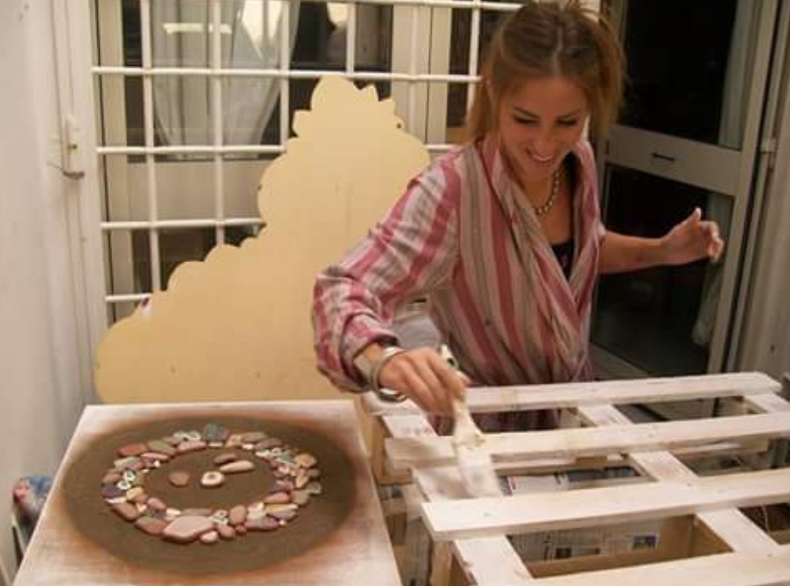

My History
L’arte del upcycling e l’amore per l’ambiente hanno sempre fatto parte di me già dall’infanzia. Raccoglievo da terra i petali dei fiori per colorare e per farne dei profumi inventati, cucivo abiti per le mie bambole con avanzi di stoffa e salvavo tutti gli animali in pericolo, addirittura aiutavo le lumache ad attraversare la strada. Sicuramente ciò che ha influenzato la mia indole è stata una nonna artista, pittrice e ceramista, una madre creativa ed indipendente, vetrinista e sempre pronta a trovare una soluzione a tutto ed un padre che ha vissuto la sua infanzia durante la seconda guerra mondiale e che quindi mi ha trasmesso l’importanza del NON SPRECO, del riciclare dell’ottimizzare. Sono cresciuta tra i racconti dei bombardamenti e di come la gente si ingegnava per andare avanti, di come mio nonno raccoglieva le lamiere degli aeri caduti per lavorarli e trasformarli in coperchi per pentole, e i colori di mia nonna che non si limitavano alle tele ma decoravano ogni cosa, mobili, pareti e vestiti.
E la mia mamma, che ha tirato su me e mio fratello da sola, ci coinvolgeva nell’aiutarla per la creazione delle vetrine da allestire che le commissionavano, sempre piene di idee creative. Oggi mi capita di soffermarmi a guardare una stoffa che ho cucito a soli 4 anni, e mi sorprende il fatto che mi avessero dato un ago in mano a quell'età eppure guardo stupita quel pezzo di stoffa e rivedo tutta la mia creatività e l’amore per il riciclo.
Finita l’università ho avuto due figli, poi una separazione molto difficile dove, caduta vittima di un narcisista ho perso di vista me stessa, fortunatamente però, grazie anche ad un bellissimo percorso offerto dal centro antiviolenza, sono riuscita a lottare per me e per i miei due meravigliosi figli. Sono rinata, e come faccio con gli scarti, mi sono donata una seconda vita ed ho ripreso a fare arte, dedicando il mio tempo alle energie positive, all'amore per i dettagli, per me stessa e per mi mi circonda e soprattutto al rispetto per l’ambiente
Da cosa nasce il nome ARTALO?
ARTALO è un verbo che abbiamo coniato una sera a tavola con i miei figli; gli chiesi:
- “Ma come direste voi, se io volessi dire, prendi questo coso e artisticalo?
E loro nel linguaggi di quel momento da videogamer mi risposero
- “ARTALO!”
